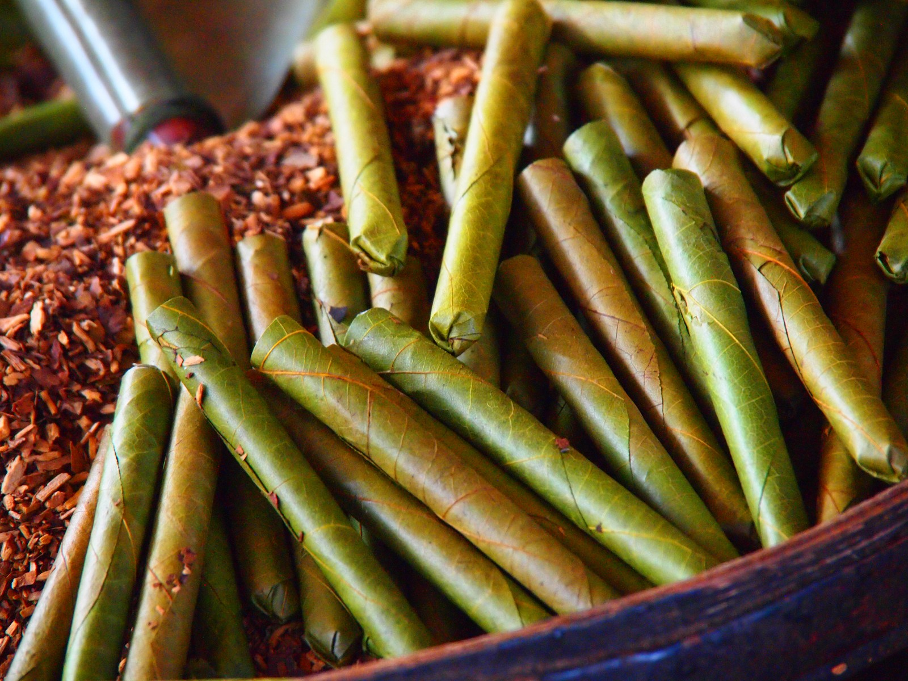

Things to do
Exploring the roads around the northern part of the lake via bicycle is quite a popular activity, and one that we enjoyed doing! Starting in Nyaung Shwe, it is possible to do a complete loop involving a transfer across the width of the lake. Most of the hotels and bike rental places will give you a map of the area, and this website has a pretty good rendition of it. Most hotels and tourist places in the area have older bikes which are typically fixed gear and which cost 1000-1500 Kyat ($1-1.50) for the day.
Some 45 minutes away from Inle Lake lie a set of delightful hot springs which you can easily visit or the day. These are made up of two pools which are segregated by sex and the waters here are said to have medicinal properties. A good way to get to the springs is to hire a bicycle which makes the soak in the hot waters at the end even more enjoyable.
Teak is a classic building material for the Burmese. Teak trees are native to Myanmar, although they’ve been harvested to such an extent that they’re no longer readily available. The long, skinny poles of the bridge cast long shadows on the surface of the lake at sunset. In the distance, you’ll see a mountain range just beyond the expanse of green that sprouts around the lake. Stroll down the bridge to get a good look at daily life in the village. Travelers often arrive on a boat, although there are also hiking and biking trails in the area. Once you’ve arrived at the village, you can take a steep hike to a monastery that offers a good view of the lake.
The most interesting by far, though, was the cheroot-making workshop. Several women of various ages sat at low tables, rolling the infamous Burmese cigarettes with a nonchalance borne from years of practice. After a brief explanation of the various ingredients, You will offere several different types to try.the “man” cheroot tasted much like a sweeter version of the cheap unfiltered Pall Malls I’d buy illegally from the corner store and smoke in the park over the road. They weren’t bad, sure,
